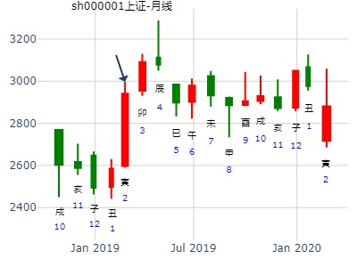
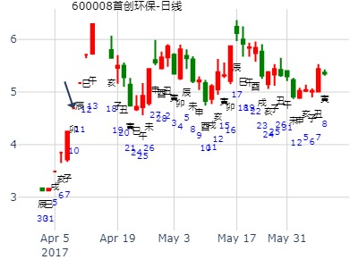
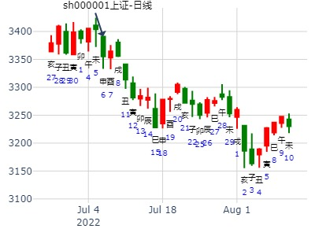

主帖标题: 卦论2013上海A股走势 -自动起卦(起卦方式)
占问事宜：2013上海A股走势
公历：2013年1月3日8时37分，星期四。
干支: 壬辰年壬子月己巳日戊辰时 (旬空: 戌亥 )
火地晋(游魂) 火雷噬嗑
勾陈 ▅▅▅▅▅ 官鬼巳火 ▅▅▅▅▅ 官鬼巳火
朱雀 ▅▅ ▅▅ 父母未土 ▅▅ ▅▅ 父母未土 世
青龙 ▅▅▅▅▅ 兄弟酉金 世 ▅▅▅▅▅ 兄弟酉金
玄武 ▅▅ ▅▅ 妻财卯木 ▅▅ ▅▅ 父母辰土
白虎 ▅▅ ▅▅ 官鬼巳火 ▅▅ ▅▅ 妻财寅木 应
腾蛇 子孙子水▅▅ ▅▅ 父母未土 应Ｘ→ ▅▅▅▅▅ 子孙子水
午月暴跌，或是动而逢合，或是子孙月破。
或是未子相害，午合未又冲子的关系？
主帖标题: T-Z-G-D上证指数擂台赛第五场第4局（2020年1月23日）T方
起卦公历：2020年1月22日11时34分(北京时间)
起卦农历：二○一九年 十二月 廿八日 午时。
干支： 己亥年 丁丑月 甲子日 庚午时 (卦身：寅)丑
主变卦 火地晋(乾宫-游魂) 之 火雷噬嗑(巽宫) [空亡:戌、亥]
玄武 ━━━ 官鬼巳火 ━━━ 官鬼巳火
白虎 ━ ━ 父母未土 ━ ━ 父母未土 世
螣蛇 ━━━ 兄弟酉金 世 ━━━ 兄弟酉金
勾陈 ━ ━ 妻财卯木 ━ ━ 父母辰土
朱雀 ━ ━ 官鬼巳火 ━ ━ 妻财寅木 应
青龙 子子 ━ ━× 父母未土 应 ━━━ 子孙子水
◇初六:晋如摧如。贞：吉。罔孚裕，无咎。 象曰：晋如，摧如；独行正也。
晋如摧如：行情受阻。断：跌。

晋之噬嗑，上证指数2019己亥年行情预测？再人
起卦时间：2019年2月5日10时46分 农历：己亥年正月初一日巳时
立春：2019年02月04日11时28分 起卦方式：手摇铜钱起卦
干支：己亥年 丙寅月 癸酉日 丁巳时 （日空：戌亥）
乾宫：火地晋 (游魂) 巽宫：火雷噬嗑
六神 伏神 本 卦 变 卦
白虎 官鬼己巳火 ▅▅▅▅▅ 官鬼己巳火 ▅▅▅▅▅
腾蛇 父母己未土 ▅▅ ▅▅ 父母己未土 ▅▅ ▅▅ 世
勾陈 兄弟己酉金 ▅▅▅▅▅ 世 兄弟己酉金 ▅▅▅▅▅
朱雀 妻财乙卯木 ▅▅ ▅▅ 父母庚辰土 ▅▅ ▅▅
青龙 官鬼乙巳火 ▅▅ ▅▅ 妻财庚寅木 ▅▅ ▅▅ 应
玄武 子孙甲子水 父母乙未土 ▅▅ ▅▅ 应 ╳→ 子孙庚子水 ▅▅▅▅▅
《晋》初六：晋如，摧如，贞吉。罔孚，裕无咎。象曰：晋如，摧如；独行正也。 裕无咎；未受命也。
注：起卦时价2618.23点。
断：1、兄弟酉金持世，空方控局；虽于月建、太岁休囚，但值日、又得父母未土独动相生，说明空方势力也不能小觑。所幸兄弟酉金本身安静不动，则空方并不会主动作为。
2、父母未土独动，耗损财爻，行情看跌；但喜本身休囚，且动化子孙爻，说明耗损之力有限，行情将不跌反涨。
3、财爻卯木暗动，临月旺相、于太岁亥水处得长生，行情必涨。对比兄弟酉金、父母未土和财爻卯木之实力，财爻卯木明显胜出。

主帖标题: 和晶科技300279到二月涨跌
紫天科技300280到二月涨跌- 手摇卦
公历时间：2020年2月19日8时22分
干 支：庚子年 戊寅月 壬辰日 甲辰时
旬 空：辰巳 申酉 午未 寅卯
乾宫：火地晋（游魂） 巽宫：火雷噬嗑
白虎 ▄▄▄▄▄ 官鬼己巳火 ▄▄▄▄▄ 官鬼己巳火
螣蛇 ▄▄ ▄▄ 父母己未土 ▄▄ ▄▄ 父母己未土 世
勾陈 ▄▄▄▄▄ 兄弟己酉金 世 ▄▄▄▄▄ 兄弟己酉金
朱雀 ▄▄ ▄▄ 妻财乙卯木 ▄▄ ▄▄ 父母庚辰土
青龙 ▄▄ ▄▄ 官鬼乙巳火 ▄▄ ▄▄ 妻财庚寅木 应
玄武 子孙甲子水 ▄▄ ▄▄ 父母乙未土 应× ▄▄▄▄▄ 子孙庚子水
主帖标题: 起卦:25日上证涨跌走势 出生年：1963年 性别：男
占事：25日上证涨跌走势
起卦方式：手动摇卦 公历时间：2007年4月23日21时1分 星期一
干支：丁亥年 甲辰月 丁亥日 辛亥时 (旬空：午未)
乾宫：火地晋（游魂） 巽宫：火雷噬嗑
青龙 ▅▅▅▅▅ 官鬼己巳火 ▅▅▅▅▅ 官鬼己巳火
玄武 ▅▅ ▅▅ 父母己未土 ▅▅ ▅▅ 父母己未土 世
白虎 ▅▅▅▅▅ 兄弟己酉金 世 ▅▅▅▅▅ 兄弟己酉金
螣蛇 ▅▅ ▅▅ 妻财乙卯木 ▅▅ ▅▅ 父母庚辰土
勾陈 ▅▅ ▅▅ 官鬼乙巳火 ▅▅ ▅▅ 妻财庚寅木 应
朱雀 子孙甲子水 ▅▅ ▅▅ 父母乙未土 应×→ ▅▅▅▅▅ 子孙庚子水
此卦好象不容乐观!请各位易友谈谈看法
[此贴子已经被作者于2007-4-23 21:05:08编辑过]

600008到5月底。
时间: 2017-04-09 7时51分
干支: 丁酉年甲辰月丙寅日 (旬空: 戌亥 )
火地晋(游魂) 火雷噬嗑
青龙 ▅▅▅▅▅ 官鬼巳火 ▅▅▅▅▅ 官鬼巳火
玄武 ▅▅ ▅▅ 父母未土 ▅▅ ▅▅ 父母未土 世
白虎 ▅▅▅▅▅ 兄弟酉金 世 ▅▅▅▅▅ 兄弟酉金
腾蛇 ▅▅ ▅▅ 妻财卯木 ▅▅ ▅▅ 父母辰土
勾陈 ▅▅ ▅▅ 官鬼巳火 ▅▅ ▅▅ 妻财寅木 应
朱雀 子孙子水▅▅ ▅▅ 父母未土 应Ｘ→ ▅▅▅▅▅ 子孙子水

主帖标题: 2020.05.15日上证指数擂台赛第十七场第5局 T方（日测）
起卦公历：2020年5月14日12时21分(北京时间)
起卦农历：二○二○年 四月 廿二日 午时。
干支： 庚子年 辛巳月 丁巳日 丙午时 (卦身：子)午
主变卦 火地晋(乾宫-游魂) 之 火雷噬嗑(巽宫) [空亡:子、丑]
青龙 ━━━ 官鬼巳火 ━━━ 官鬼巳火
玄武 ━ ━ 父母未土 ━ ━ 父母未土 世
白虎 ━━━ 兄弟酉金 世 ━━━ 兄弟酉金
螣蛇 ━ ━ 妻财卯木 ━ ━ 父母辰土
勾陈 ━ ━ 官鬼巳火 ━ ━ 妻财寅木 应
朱雀 子子 ━ ━ ×父母未土 应 ━━━ 子孙子水
◇初六:晋如摧如。贞：吉。罔孚裕，无咎。 象曰：晋如，摧如；独行正也。
大象：晋，进也。吉象。
初六：晋如摧如。多方反击。爻变：未动午合化子，吉。
总断：涨幅不错。形态：高开高走。
603993下周 风生水起
起卦方式：手动摇卦
公历时间：2015年6月6日13时21分
干 支：乙未年 壬午月 癸丑日 己未时
旬 空：辰巳 申酉 寅卯 子丑
乾宫：火地晋（游魂） 巽宫：火雷噬嗑
六神 伏 神 【本 卦】 【变 卦】
白虎 ▄▄▄▄▄ 官鬼己巳火 ▄▄▄▄▄ 官鬼己巳火
螣蛇 ▄▄ ▄▄ 父母己未土 ▄▄ ▄▄ 父母己未土 世
勾陈 ▄▄▄▄▄ 兄弟己酉金 世 ▄▄▄▄▄ 兄弟己酉金
朱雀 ▄▄ ▄▄ 妻财乙卯木 ▄▄ ▄▄ 父母庚辰土
青龙 ▄▄ ▄▄ 官鬼乙巳火 ▄▄ ▄▄ 妻财庚寅木 应
玄武 子孙甲子水 ▄▄ ▄▄ 父母乙未土 应× ▄▄▄▄▄ 子孙庚子水
紫光国微6.8壬午星期一-6.12哪日底？
男 占事：没填
公历起卦时间：2020年6月9日14时43分 (电脑自动)
干支：庚子年 壬午月 癸未日 己未时 （日空：申酉）
乾宫：火地晋 (游魂) 巽宫：火雷噬嗑
六神 伏神 本 卦 变 卦
白虎 官鬼己巳火 ▅▅▅▅▅ 官鬼己巳火 ▅▅▅▅▅
螣蛇 父母己未土 ▅▅ ▅▅ 父母己未土 ▅▅ ▅▅ 世
勾陈 兄弟己酉金 ▅▅▅▅▅ 世 兄弟己酉金 ▅▅▅▅▅
朱雀 妻财乙卯木 ▅▅ ▅▅ 父母庚辰土 ▅▅ ▅▅
青龙 官鬼乙巳火 ▅▅ ▅▅ 妻财庚寅木 ▅▅ ▅▅ 应
玄武 子孙甲子水 父母乙未土 ▅▅ ▅▅ 应 ╳→ 子孙庚子水 ▅▅▅▅▅
主帖标题: 6.16上证收盘走势？zdfgw
求测人：某人，男，庚午(1990年)，自动起卦(起卦方式)
占问事宜：要问的事情
公历：2022年6月16日6时24分，星期四。
干支：壬寅年 丙午月 庚子日 己卯时 (卦身：酉)
主变卦 火地晋(乾宫-游魂) 之 火雷噬嗑(巽宫) [空亡:辰、巳]
螣蛇 ▅▅▅▅▅ 官鬼己巳火 ▅▅▅▅▅ 官鬼己巳火
勾陈 ▅▅ ▅▅ 父母己未土 ▅▅ ▅▅ 父母己未土 世
朱雀 ▅▅▅▅▅ 兄弟己酉金 世 ▅▅▅▅▅ 兄弟己酉金
青龙 ▅▅ ▅▅ 妻财乙卯木 ▅▅ ▅▅ 父母庚辰土
玄武 ▅▅ ▅▅ 官鬼乙巳火 ▅▅ ▅▅ 妻财庚寅木 应
白虎 子孙甲子水 ▅▅ ▅▅×父母乙未土 应 ▅▅▅▅▅ 子孙庚子水
晋之噬嗑，2011.8.1－8.5，上证周卦（永智）
公历时间：2011年7月30日9时8分
干 支：辛卯年 乙未月 丙戌日 癸巳时 旬 空：(午未)
乾宫：火地晋（游魂） 巽宫：火雷噬嗑
六神 伏 神 【本 卦】 【变 卦】
青龙 ▄▄▄▄▄ 官鬼己巳火 ▄▄▄▄▄ 官鬼己巳火
玄武 ▄▄ ▄▄ 父母己未土 ▄▄ ▄▄ 父母己未土 世
白虎 ▄▄▄▄▄ 兄弟己酉金 世 ▄▄▄▄▄ 兄弟己酉金
螣蛇 ▄▄ ▄▄ 妻财乙卯木 ▄▄ ▄▄ 父母庚辰土
勾陈 ▄▄ ▄▄ 官鬼乙巳火 ▄▄ ▄▄ 妻财庚寅木 应
朱雀 子孙甲子水 ▄▄ ▄▄ 父母乙未土 应X-> ▄▄▄▄▄ 子孙庚子水
此卦辰日跌，跟癸巳年卦类似。癸巳年卦：晋之噬嗑。父化子未化子。午月暴跌。六害。
未跌后，再涨到寅日。
此中应未日大跌。
马后炮：
1.子孙福神月克日克，飞神克，且不上卦，弱。
2.财卯入月墓日合，辰日破合且增旺父母低开大跌。
丑日冲旺父母未日，跌。
3.申日子水长生，涨涨。
男 占事：601857中国石油下周涨跌
公历起卦时间：2015年7月17日18时46分 (电脑自动)
干支：乙未年 癸未月 甲午日 癸酉时 （日空：辰巳）
乾宫：火地晋 (游魂) 巽宫：火雷噬嗑
玄武 官鬼己巳火 ▅▅▅▅▅ 官鬼己巳火 ▅▅▅▅▅
白虎 父母己未土 ▅▅ ▅▅ 父母己未土 ▅▅ ▅▅ 世
腾蛇 兄弟己酉金 ▅▅▅▅▅ 世 兄弟己酉金 ▅▅▅▅▅
勾陈 妻财乙卯木 ▅▅ ▅▅ 父母庚辰土 ▅▅ ▅▅
朱雀 官鬼乙巳火 ▅▅ ▅▅ 妻财庚寅木 ▅▅ ▅▅ 应
青龙 子孙甲子水 父母乙未土 ▅▅ ▅▅ 应 ╳→ 子孙庚子水 ▅▅▅▅▅
主帖标题: 测7。7 沪市大盘
公历时间：2022年7月6日15时5分 (手工指定六爻)
干支：壬寅年 丙午月 庚申日 甲申时 （日空：子丑）
乾宫：火地晋 (游魂) 巽宫：火雷噬嗑
六神 伏神 本 卦 变 卦
螣蛇 官鬼巳火 ▅▅▅▅▅ 官鬼巳火 ▅▅▅▅▅
勾陈 父母未土 ▅▅ ▅▅ 父母未土 ▅▅ ▅▅ 世
朱雀 兄弟酉金 ▅▅▅▅▅ 世 兄弟酉金 ▅▅▅▅▅
青龙 妻财卯木 ▅▅ ▅▅ 父母辰土 ▅▅ ▅▅
玄武 官鬼巳火 ▅▅ ▅▅ 妻财寅木 ▅▅ ▅▅ 应
白虎 子孙子水 父母未土 ▅▅ ▅▅ 应 ╳→ 子孙子水 ▅▅▅▅▅
申日大跌，测酉日大盘。父母化空。
兄弟旺，父母生之，过旺，虽化空，但依旧微过旺，小涨。父空方做多，明天戌日，空方继续做多。但毕竟化空，
总体今明两天维持震荡向上格局。

主帖标题: 这是我起的这几个股的月卦，希望有同道中人一起合作
占事：600178这个月走势
排卦：元亨利贞网六爻在线排盘系统 http://www.china95.net
公历起卦时间：2016年9月11日22时50分 (手工指定)
干支：丙申年 丁酉月 丙申日 己亥时 （日空：辰巳）
神煞：驿马－寅 桃花－酉 日禄－巳 贵人－酉，亥
乾宫：火地晋 (游魂) 巽宫：火雷噬嗑
青龙 官鬼己巳火 ▅▅▅▅▅ 官鬼己巳火 ▅▅▅▅▅
玄武 父母己未土 ▅▅ ▅▅ 父母己未土 ▅▅ ▅▅ 世
白虎 兄弟己酉金 ▅▅▅▅▅ 世 兄弟己酉金 ▅▅▅▅▅
腾蛇 妻财乙卯木 ▅▅ ▅▅ 父母庚辰土 ▅▅ ▅▅
勾陈 官鬼乙巳火 ▅▅ ▅▅ 妻财庚寅木 ▅▅ ▅▅ 应
朱雀 子孙甲子水 父母乙未土 ▅▅ ▅▅ 应 ╳→ 子孙庚子水 ▅▅▅▅▅
主题：038003丁亥 庚戌 丙子 壬辰 (申酉空) 丁亥年八月廿九(2007/10/09 07:32:12) 火地晋 火雷噬嗑 青龙 官鬼巳火 ／ 官鬼巳火 ／ 玄武 父母未土 ∥ 父母未土 ∥ 世 白虎 兄弟酉金 ／ 世 兄弟酉金 ／ 腾蛇 妻财卯木 ∥ 父母辰土 ∥ 勾陈 官鬼巳火 ∥ 妻财寅木 ∥ 应子孙子水：朱雀 父母未土 × 应 子孙子水 ／
主帖标题: 乙亥月我的股票能赚钱吗？？
姓名： 出生年:1981 性别：男 占事：起卦方式：手动摇卦中国预测网六爻排盘
公历时间：2019年11月8日18时2分 农历时间：己亥年 十月十二日酉时
干 支：己亥年 乙亥月 己酉日 癸酉时
旬 空：辰巳 申酉 寅卯 戌亥
神 煞：驿马─亥 桃花─午 日禄─午 贵人─子，申
乾宫：火地晋（游魂） 巽宫：火雷噬嗑
勾陈 ▄▄▄▄▄ 官鬼己巳火 ▄▄▄▄▄ 官鬼己巳火
朱雀 ▄▄ ▄▄ 父母己未土 ▄▄ ▄▄ 父母己未土 世
青龙 ▄▄▄▄▄ 兄弟己酉金 世 ▄▄▄▄▄ 兄弟己酉金
玄武 ▄▄ ▄▄ 妻财乙卯木 ▄▄ ▄▄ 父母庚辰土
白虎 ▄▄ ▄▄ 官鬼乙巳火 ▄▄ ▄▄ 妻财庚寅木 应
螣蛇 子孙甲子水 ▄▄ ▄▄ 父母乙未土 应× ▄▄▄▄▄ 子孙庚子水
主帖标题: 000520 长航凤凰 周五涨还是跌?
000520 长航凤凰 今天到下周涨跌
公历时间：2019年12月20日9时13分
干 支：己亥年 丙子月 辛卯日 癸巳时
旬 空：辰巳 申酉 午未 午未
神 煞：驿马─巳 桃花─子 日禄─酉 贵人─寅，午
乾宫：火地晋（游魂） 巽宫：火雷噬嗑
螣蛇 ▄▄▄▄▄ 官鬼己巳火 ▄▄▄▄▄ 官鬼己巳火
勾陈 ▄▄ ▄▄ 父母己未土 ▄▄ ▄▄ 父母己未土 世
朱雀 ▄▄▄▄▄ 兄弟己酉金 世 ▄▄▄▄▄ 兄弟己酉金
青龙 ▄▄ ▄▄ 妻财乙卯木 ▄▄ ▄▄ 父母庚辰土
玄武 ▄▄ ▄▄ 官鬼乙巳火 ▄▄ ▄▄ 妻财庚寅木 应
白虎 子孙甲子水 ▄▄ ▄▄ 父母乙未土 应× ▄▄▄▄▄ 子孙庚子水